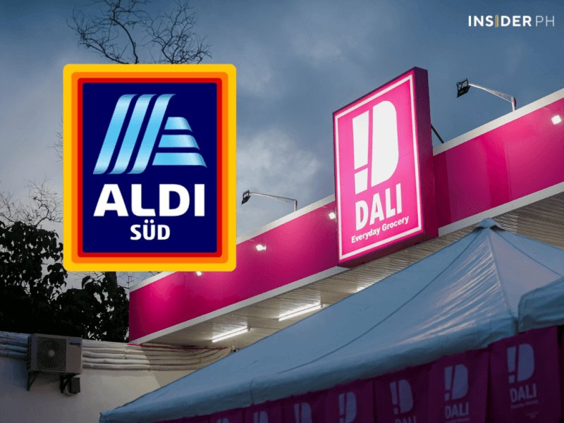
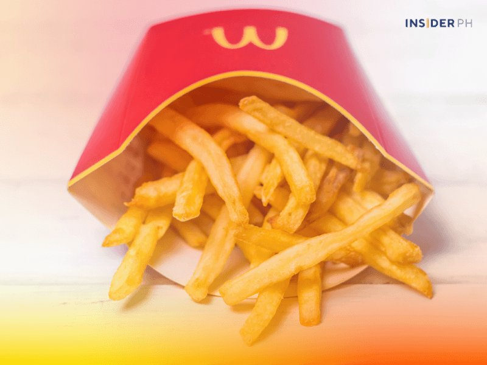
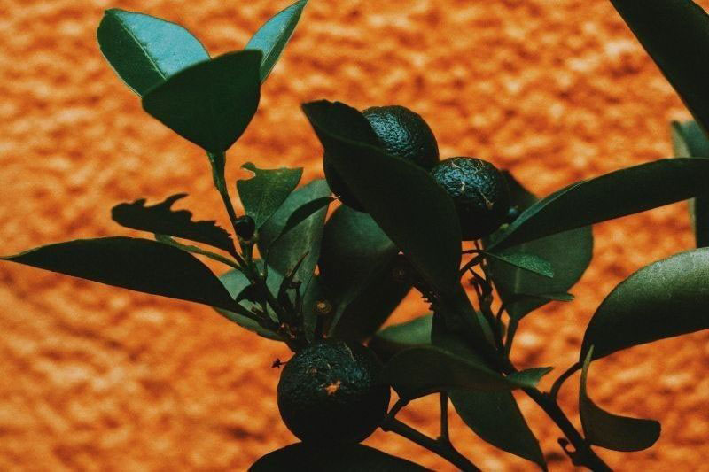

Tape
ALDI SÜD takes an undisclosed minority stake in DALI Everyday Grocery — 1,300+ hard-discount stores, 1M+ daily customers, ~10k jobs, hundreds of local suppliers; DALI stays independently managed; ALDI SÜD has ~7,500 stores in 11 countries (Asia so far mainly China). McDonald’s PH: unlimited fries one hour Fridays since Jul 10 — ≥350k participants every Friday; near six-digit kg of fries cooked daily; chicken still #1 SKU but fries ride every basket; demand mapped in prior-year Q4. DA (budget hearing sidelines): veg prices jumped after Luis/Maymay/Neneng + Habagat; fish up as boats stayed in; pork “stable” at retail while farmgate −~19% YoY on Q2 production +5.6% and rainy-season ASF rush sales; HVC damage P1.37B, fisheries P412.84M; Metro Manila tags Sep 7: ham P350, liempo P370, frozen kasim P240, frozen liempo P300/kg.
For Calamba: DALI with ALDI money means more barangay boxes and tighter everyday grocery pricing — watch rent and traffic next to your service corridors, not just Nuvali. McD is buying Friday habit with a side dish, not a new protein — if you’re QSR-adjacent, match experience or stay out of the fryer war. Kitchen: veg and fish invoices are live this week; pork farmgate soft is a buy window, not a permanent floor — ASF still in 76/82 provinces.

ALDI SÜD buys into DALI — hard discount gets a German backer
7 Sep 2026
German discounter ALDI SÜD Group took an undisclosed minority stake in Philippine hard-discount chain DALI Everyday Grocery, betting on more stores in a market where everyday low price still has runway. DALI already runs more than 1,300 outlets and says it serves over one million customers a day; the companies kept stake size and price quiet. Local management stays in charge — ALDI is capital and playbook partner, not a rebrand overnight. ALDI SÜD CFO Marcus Almeling called the Philippines a high-growth grocery market and framed the deal as long-term; DALI’s Regie dela Cruz tied the money to more stores, jobs (~10k already), and a thicker local supplier bench from farmers to manufacturers. ALDI SÜD runs ~7,500 stores across 11 countries; Asia exposure until now was thin (mainly China). Opener/COO read: this is the format that sits between sari-sari and Puregold — when it thickens in Laguna/Cavite barangays, grocery trip frequency rises and price anchors drop. Your edge is cooked food and catchments SM Nuvali won’t fully own; watch lease asks near new DALI boxes and don’t try to out-SKU them.
Open Insider PH · Open RetailDetail

McD PH: fries as Friday habit, not a one-off promo
7 Sep 2026
McDonald’s Philippines is treating fries like a growth lever. After National Fries Day landed hard, marketing director Yves Nakpil said the chain kept every Friday as unlimited fries for one hour — first of its kind in PH, possibly a global McD first. Participation: at least 350,000 customers every Friday since the Jul 10 launch. Success metric is involvement, not just ticket count — “part of the experience and daily lives.” Chicken remains the biggest product, but fries ride alongside most meals. Network cooks close to six digits of kilograms of fries daily under a “Gold Standard” cook rule. Supply tell: demand for major campaigns is mapped in Q4 of the prior year so international and local suppliers can pre-position stock. Operator read: this is day-part ownership via a side dish. You’re not fighting a temporary discount — you’re fighting a weekly ritual with a year of potato planning behind it. If your QSR or casual competes on speed and value, either build your own recurring hook or stay away from Friday fryer wars and win elsewhere (breakfast protein, late dinner, office lunch).
Open Insider PH

Prices now: veg/fish up; pork farmgate soft
7 Sep 2026
Yesterday’s DA damage tally is printing as prices. On the sidelines of a House budget hearing, Agriculture Secretary Francisco Tiu Laurel Jr. said vegetables jumped after flooding from recent cyclones and Habagat, and fish rose because boats stayed shorebound. Pork he called stable at the consumer level — while a separate DA readout Monday showed farmgate down nearly 19% YoY as raisers rush sales ahead of rainy-season ASF risk; Q2 production was +5.6%, and imports are set to drop ~50,000 MT this year. Metro Manila market tags as of Sep 7: ham P350/kg, liempo P370, frozen kasim P240, frozen liempo P300. Storm line items: high-value crops P1.37B damaged, fisheries P412.84M. Laurel: prices usually normalize in three weeks to a month. Kitchen read for south Luzon: treat produce and wet-fish quotes as live this week — dual-source and accept short spikes. On pork, soft farmgate is a buy window for kasim/liempo while ASF still sits in 76 of 82 provinces; don’t build a six-month menu cost on today’s farmgate. Vaccine/repopulation is the multi-year story; this week’s story is invoice timing.
Open BusinessWorld · Open Context.ph